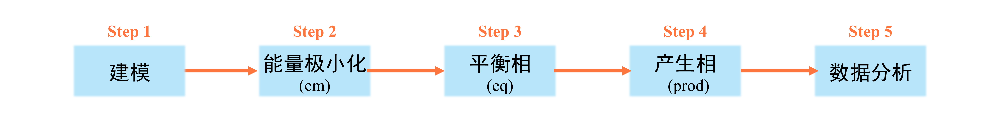

GROMACS的使用
本篇文章主要用于说明分子动力学模拟软件GROMACS的使用方法。
GROMACS是由荷兰格罗宁根大学开发，1991年发布最初版本。目前由瑞典皇家理工学院和乌普萨拉大学维护。GROMACS的官网为https://www.gromacs.org/。分子动力学模拟的一般步骤如下：

建模
目前建模的方式主要有以下的几种方法：
- 采用Packmol进行建模
Packmol是一个免费的、构建分子动力学模拟初始结构的工具。关于Packmol的使用，可参考分子动力学初始结构构建程序Packmol的使用。另外，本网页也提供了使用手册。
- 采用GROMACS中的命令进行建模
在GROMACS中，常用的进行建模的命令如下：
-
gmx solvate命令：生成一个充满指定分子的盒子，默认添加的分子为SPC水分子。下面是一些例子：
gmx solvate -box 2 4 4 -o test.gro
参数
-box 2 4 4为设定盒子的大小为2*4*4(单位nm)，参数-o test.gro为填充后粒子的坐标信息输出到test.gro文件中。综上，这条命令使用水分子填充一个大小为2*4*4(单位nm)的盒子，并将填充好的结构文件输出到test.gro文件中。gmx solavte -cp CL.gro -o solv.gro
参数
-cp CL.gro的含义是填充水的体系是CL.gro这个文件所描述的体系。参数-o solv.gro的含义是填充后的结构信息输出到solv.gro这个文件中。 -
gmx insert-molecules命令：将指定分子插入体系空隙中，或填充一个指定分子的盒子。下面是一个例子：
gmx insert-molecules -f test.gro -ci CL.pdb -o out.gro -nmol 55参数
-f test.gro的含义是需要在test.gro对应的这个体系中插入分子。参数-ci CL.pdb为插入分子的结构文件(例如这里插入的是Cl离子，那么CL.pdb为一个Cl离子的结构)在test.gro。参数-o out.gro为插入后的结构输出到out.gro。参数-nmol 55为插入的分子数量为55个。
- 采用VMD进行建模
通常我们可以使用VMD对结构进行拼接，然后得到拼接之后的结构。在对多个结构进行拼接时，除了使用VMD完成，还可以使用modGro完成。
GROMACS模拟
该部分主要包括能量极小化(简称em)、平衡相(简称eq)和产生相(简称prod)三个部分。
能量极小化
能量极小化的目的是消除模型中严重不合理的接触。其有两种常用算法：最陡下降法(Steepest Decent Method)与共轭梯度法(Conjugated Gradient Method)。一般来说，对于难以能量极小化的体系建议先使用最陡下降法，然后再使用共轭梯度法。该步的mdp文件如下：
define = -DFLEXIBLE
integrator = steep ;use steepest decent method
nsteps = 10000
emtol = 1000.0
emstep = 0.01
;
nstxout = 100
nstlog = 50
nstenergy = 50
;
pbc = xyz
cutoff-scheme = Verlet
coulombtype = PME
rcoulomb = 1.0
vdwtype = Cut-off
rvdw = 1.0
DispCorr = EnerPres
;
constraints = none
define = -DFLEXIBLE
integrator = cg ;use conjugated gradient method
nsteps = 10000
emtol = 100.0
emstep = 0.01
;
nstxout = 100
nstlog = 50
nstenergy = 50
;
pbc = xyz
cutoff-scheme = Verlet
coulombtype = PME
rcoulomb = 1.0
vdwtype = Cut-off
rvdw = 1.0
DispCorr = EnerPres
;
constraints = none
mdp文件如下：
define = -DFLEXIBLE
integrator = cg ;use conjugated gradient method
nsteps = 10000
emtol = 100.0
emstep = 0.01
;
nstxout = 100
nstlog = 50
nstenergy = 50
;
pbc = xyz
cutoff-scheme = Verlet
coulombtype = PME
rcoulomb = 1.0
vdwtype = Cut-off
rvdw = 1.0
DispCorr = EnerPres
;
constraints = none
平衡相
该步的目的是使体系达到充分的平衡。关于如何判断体系是否平衡，详见谈谈怎么判断分子动力学模拟是否达到了平衡。
产生相
该步的目的是产生出能够被用来统计所需属性的数据与轨迹。换句话说，分子动力学模拟所需的数据全部在该步中完成取样。
注意
能量极小化请在虚拟机上完成。对于平衡相，若体系较小，建议在虚拟机中完成。若体系较大，建议在超算上完成。对于产生相，建议在超算中完成。
提示
经测试，本课题组所用超算上运行一个gromacs任务当用一张显卡和4个核时效率最大。因此，SubGmx.sh运行每个任务用一张显卡和4个核。
在超算中，若需提交GROMACS计算任务，可使用SubGmx.sh命令。SubGmx.sh命令的使用方法如下：
SubGmx.sh [name of .tpr file]
SubGmx.sh后接一个参数，该参数为需要运行的GROMACS的tpr文件。tpr文件一般在虚拟机中生成。
数据分析与处理
对于一般的物理量，GROMACS中有自带的命令可以进行求解。较为常见的如下：
gmx msd：计算均方位移gmx rdf：计算径向分布曲线和配位数曲线
更多的命令请看GROMACS手册。此外，还可利用VMD进行数据分析或Python库(例如MDAnalysis)进行分析。